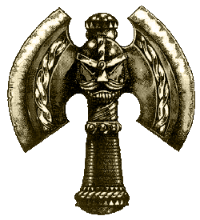

|
Letöltések
A PDF file-okhoz Adobe
Acrobat Reader szükséges, amit innen
tölthetsz le!
|
Templates
- A WHFB-ben használatos
sablonok letölthetõ verziója. Egy
fekete fehér oldal, nyomtatás után ki
kell vágni (PDF file, ZIP-elve).
Character
sheet - Angol
nyelvû karakterlap WFRP-hez (PDF-ben,
ZIP-elve).
World
map - Óvilág
részletes térképe (JPG formátum,
ZIP-elve).
Mordheim
rooster - Karakterlap, melyen
nyilvántart- hatod a bandádat. (PDF,
ZIP-elve).
Fantasy
barn - Színes, fantasy
épület. Nyomtatás után ki kell vágni
és összeragasztani ( PDF, ZIP-elve).
|
 |
Mordheim
jelzõk - Saját készítésû jelzõk
Mordheimhez. Könnyebbé és "figura kímélõbbé"
teszik a játékot. Használati útmutató mellékelve!
(9-es Corel file, ZIP-elve).
Dark
elf banners - Sötét elf lobogók,
két színes oldal és egy fekete-fehér.
(PDF formátum, ZIP-elve).
Dark
Angels banners - A Dark Angels ûrgárdista
rendház zászlói. Nagy felbontású, méretará-
nyos, CMYK képek. Egybõl nyomtathatóak. A mellékelt
fekete lapot a zászlók hátoldalára érdemes
nyomtatni, hogy az ne maradjon fehér (9-es Corel
file, ZIP-elve).
Dwarf
banners - Törpe
zászlók, egy fekete-fehér oldal. (PDF file,
ZIP-elve).
High
Elf banners - Zászlók a Nemes tünde
seregeknek! Egy színes és egy fekete-fehér lap
(PDF-ben, ZIP-elve).
Skaven
banners - Skaven seregzászlók,
egy fekete-fehér oldal, (PDF formátum, ZIP-elve).
CGI
Dreadnought - Egy rövid filmecske,
ahol egy ûrgárdista dreadnought-ot láthatunk
mozgás közben. Nagyon élethû és szép videó!
(AVI file, ZIP-elve, Divx codec szükséges).
Book
of the Rat - Talán a leghíresebb nem
hivatalos kiegészítõ a WFRP-hez. Részleteiben
mutatja be a Skaven-eket és társadalmukat. Angol
nyelvû! (RTF formátum, ZIP-elve).
Da
Book of Goblins - Szintén egy nem
hivatalos, angol nyelvû kiegészítõ, amely
mélyebb betekintést enged a goblinok életébe,
szokásaiba. (RTF file-ok, ZIP-elve).
Thunders
of Wars & Hammers Adventures - Ez egy angol
nyelvû modulgyûjtemény Warhammer Fantasy
Roleplay-hez (PDF formátumban ZIP-elve).
Shadowy
Dealing Sourcebook - Angol nyelvû,
nem hivatalos kiegészítõ, mely bûnszövet-
kezetek élettét hivatott a játékosoknak
bemutatni (Word dokumentum, ZIP-elve).
Bad
Tidings - Angol nyelvû kaladmodul
WFRP-hez. (PDF formátumban ZIP-elve).
Crossing
the border - Szintén
egy angol nyelvû modul WFRP-hez (PDF
formátum, ZIP-elve).
Hasznos töltögetést! - Rincewind
|